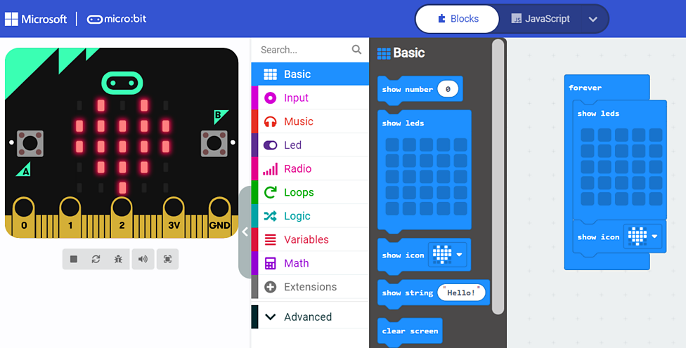
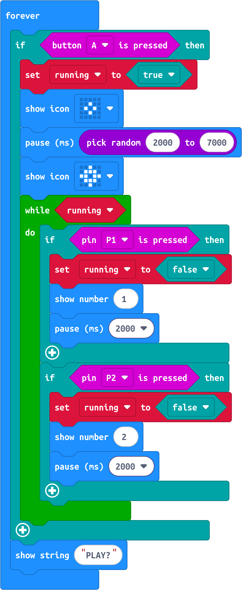

Students build a cardboard-and-foil game board, then program a Micro:bit to create a two-player reaction-time challenge.
Micro:bit Reaction Game Introduction
Learn what a Micro:bit is and how inputs, outputs, timing, and events work together in a simple game.
AZ 5th Grade Standards
Students build touch-sensitive switches with cardboard and tin foil, then program a Micro:bit (often via MakeCode) for a two-player reaction game. The Micro:bit waits a random delay, shows a signal, and measures who completes their circuit first — emphasizing input/output, randomness, timing/variables, events, and basic electronics.
Field Trip Preparation
Try a virtual Micro:bit in Microsoft MakeCode — start with the Blinking Heart tutorial. Explore interests and careers, then discuss what students would like to build.
Downloading to Your Micro:bit

Start with the Flashing Heart tutorial on makecode.microbit.org, plug in your Micro:bit, and download your code.
Micro:bit Reaction Game — 2 Players
Build and play a two-player reaction game using foil electrodes connected to Micro:bit pins.
Building the Game Board
Construct the board from cardboard and tin foil to create touch-sensitive switches for each player.
Giving Directions to the Micro:bit (Coding)

Open the MakeCode project: Reaction Game Code. Write and refine the code that waits, signals, and declares a winner.
Micro:bit Buzzwire Game — Any Number of Players
Optional extension activity: Buzzwire game video.
Resources & Worksheets
- Field Trip Preparation (url)
- Field Trip Preparation (book)
- Field Trip Preparation (url)
Full lesson plans, worksheets, and media are also available in the Steamspace Moodle course.